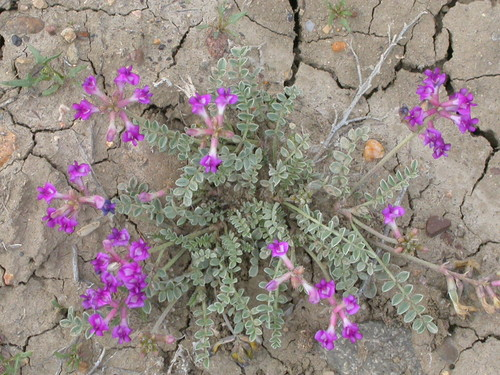

Bear-like Digger Bee
Anthophora ursina native bee
A fast-flying, soil-nesting solitary digger bee. Foraging: a broad generalist (polylectic).
10 documented plant relationships.
sips nectar at
 Alberta PenstemonPenstemon albertinus
Alberta PenstemonPenstemon albertinus
Missouri MilkvetchAstragalus missouriensisMoss PhloxPhlox hoodii Jason Sturner, some rights reserved (CC BY)") Nodding OnionAllium cernuum
Nodding OnionAllium cernuum Jason Alexander, some rights reserved (CC BY), uploaded by Jason Alexander") Slender Blue BeardtonguePenstemon procerus
Slender Blue BeardtonguePenstemon procerus Matt Lavin, some rights reserved (CC BY-SA)") Three Flowered Avens (Prairie Smoke, Old Man's Whiskers)Geum triflorum
Three Flowered Avens (Prairie Smoke, Old Man's Whiskers)Geum triflorum Ole Husby, some rights reserved (CC BY-SA)")
 Matt Lavin, some rights reserved (CC BY-SA)")